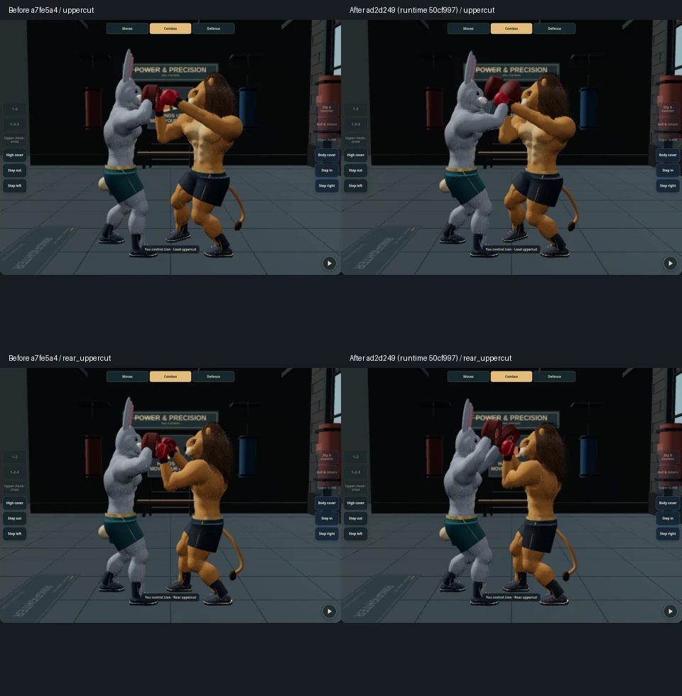

Left: R96 a7fe5a4. Right: ad2d249, runtime 50cf997. Both uppercuts at phase 0.5. These are motion corrections on the existing character, not a new realism asset.

Implementation, validation, CPU cost and limitations · Capture metadata · RingFighter